Immersion a presence, smyslové vjemy člověka — zrak, sluch, hmat, propriocepce — a kinetóza a doporučení pro vývoj VR aplikací.
Objektivní technická vlastnost systému — jak moc technologie vytváří skutečný dojem reality pro lidské smysly.
Subjektivní psychologický pocit — jak moc je vytvořena iluze skutečné přítomnosti ve virtuálním světě.
Vyšší immersion ≠ zaručená presence. Rozbité, nekonzistentní nebo neplynulé prostředí dokáže zničit pocit presence i při špičkové technické kvalitě. Rozhoduje soulad smyslových vstupů a reakce světa na uživatele.
spatial presence — pocit, že je člověk součástí virtuálního prostředí: „já jsem tady“.
Příklad: stojím v místnosti, mohu se rozhlédnout a mám ruce.
social presence — pocit, že ostatní bytosti jsou také součástí VR a jsou skutečně přítomny.
Příklad: druhý avatar mě poslouchá, dívá se na mě a reaguje.
co-presence — pocit, že sdílíme stejný prostor a vzájemně o sobě víme.
Příklad: podáváme si virtuální předmět a oba ho vidíme na stejném místě.
Pozor na terminologii: „environmentální přítomnost“ není standardní kategorie. Reakci světa na uživatele lépe vystihuje plausibility illusion; v literatuře se proto setkáte hlavně s spatial presence, social presence a co-presence. Všechny složky se vzájemně posilují.
Terapie fobií, výcvik záchranářů, nácvik rizikových procedur, měkké dovednosti a školení, kde je potřeba vyvolat autentickou emoční reakci.
Příklad z praxe: ve VR terapii akrofobie pacienti uvádějí strach a fyziologické reakce (tep, pocení) stejně jako u skutečné výšky — právě díky dostatečné presence lze bezpečně trénovat zvládání úzkosti.
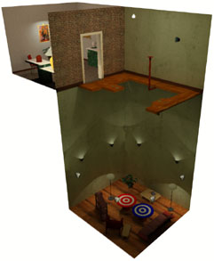
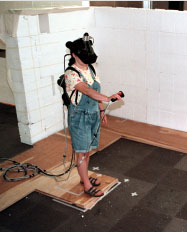
Díky přesné poloze a hmatové odezvě bylo dosaženo mnohem lepšího ponoření do VR — účastníci obcházeli okraj jámy opatrněji a někteří odmítali přejít.
Měření je velmi subjektivní a mezi odborníky stále není jednotný konsenzus.
Neexistuje jediná „správná“ metrika. Nejlepší praxe kombinuje dotazník s fyziologií a pozorováním chování — každá metoda zachycuje jinou část zážitku.
Autonomní nervový systém reaguje na pocit ohrožení nebo vzrušení — srdce zrychlí. Čím silnější je presence, tím silnější je i fyziologická odpověď. Měříme změnu tepu vůči klidové baseline, ne absolutní hodnotu.
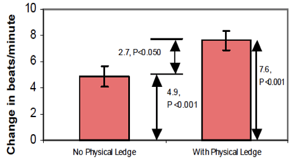
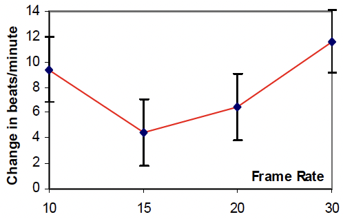
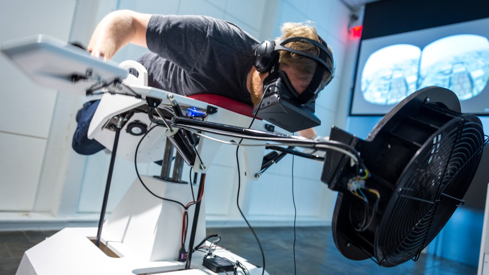
Nutné přesně zjistit, jak člověk vnímá svět pomocí svých smyslů — jaké podněty registruje, jak je zpracovává a kde jsou hranice jeho vnímání (rozlišení, zorné pole, latence, frekvence).
Vytvořit technické řešení tak, aby co nejvíce ošálilo lidské smysly — displeje, optika, prostorový zvuk, haptika a tracking musí odpovídat tomu, co mozek očekává.
Dva směry zpracování: bottom-up (data ze smyslů) a top-down (očekávání a zkušenosti mozku). VR funguje nejlépe, když jsou oba směry v souladu — scéna musí vypadat a chovat se tak, jak mozek předpokládá.
Audio-vizuální synchronie je tolerována v řádu desítek ms. Větší rozptyl vede k rozpadu iluze — mozek přestane vnímat zvuk a obraz jako jednu událost.
Synchronní vizuálně-hmatická stimulace změní pocit vlastnictví ruky — mozek přijme gumovou ruku za svou (Botvinick & Cohen, 1998). Stejný princip funguje u avatarů a full-body trackingu.
Tyto smysly jsou pro VR často důležitější než čich a chuť — určují, zda se uživatel cítí být součástí světa a zda se necítí špatně.
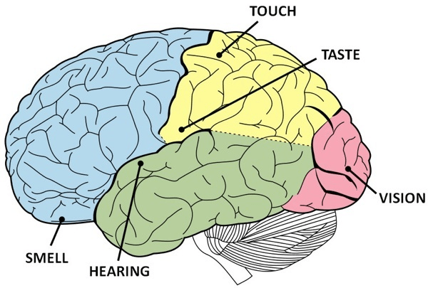
Priorita investic do smyslové stimulace: zrak → hmat → sluch. Nesoulad mezi vestibulárním systémem a zrakem však i při skvělé grafice způsobuje kinetózu.
Vizuální vstup je převáděn na elektrochemické signály pro mozek:
Tyčinky převažují na periferii, čípky ve fovei. Tento nepoměr vysvětluje, proč detaily vidíme jen v úzkém centrálním poli.
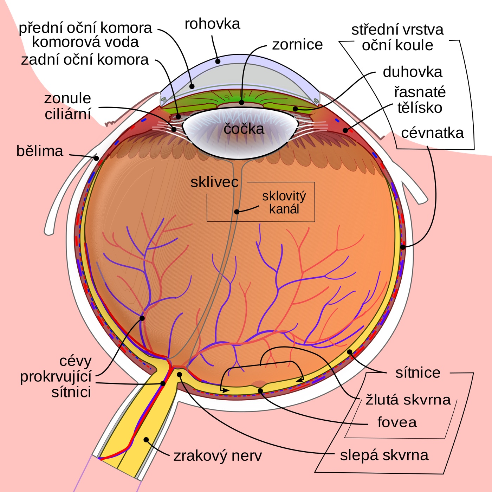
Běžné headsety nabízejí kolem 100–110° — zhruba polovinu lidského zorného pole. Uživatel má pocit „kukátkového efektu“ a vnímá černé okraje. Proto se výrobci snaží FoV zvětšovat a okraje alespoň opticky potlačit.
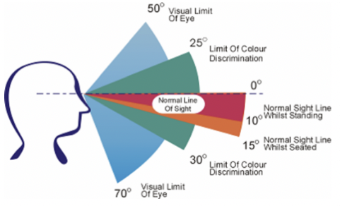
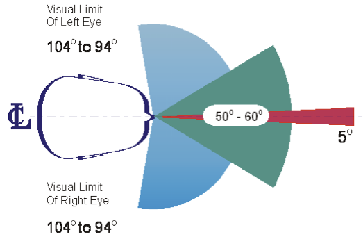
Když se díváme na objekt v určité vzdálenosti, oči se současně stočí (vergence) a zaostří (akomodace) na stejnou vzdálenost. Mozek tento svazek používá jako silný signál hloubky.
Oči konvergují k virtuálnímu objektu, ale čočka zaostřuje stále na pevný displej. Vzniká vergence–accommodation conflict.
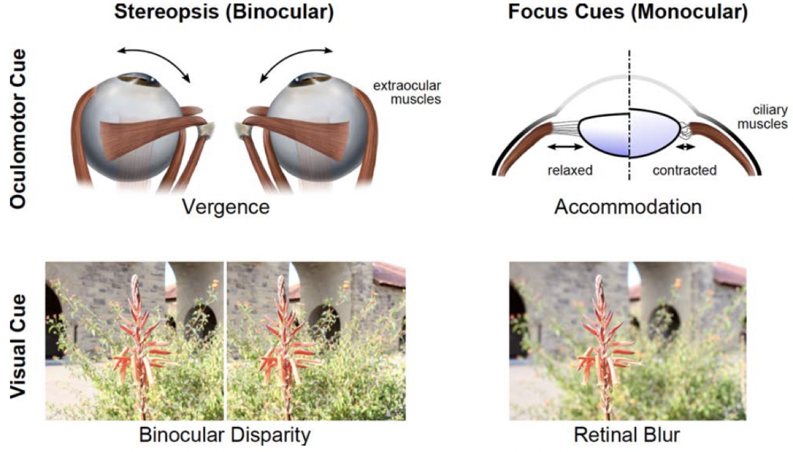
Vizuální diskomfort, únava očí, nevolnost, dvojité vidění, bolesti hlavy a u dětí i riziko ovlivnění vývoje zrakového systému při dlouhém používání.
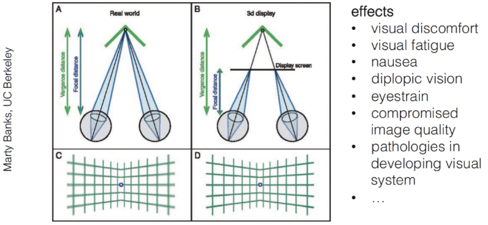
Ostrost displeje se udává v PPD (pixelech na stupeň). Pro „nerozlišitelné“ pixely potřebujeme zhruba 60 PPD. Podle třídy zařízení dnes: Quest 3 ~25 PPD, Vision Pro ~34–40 PPD, Varjo XR-4 a Pimax Crystal ~40–50+ PPD.
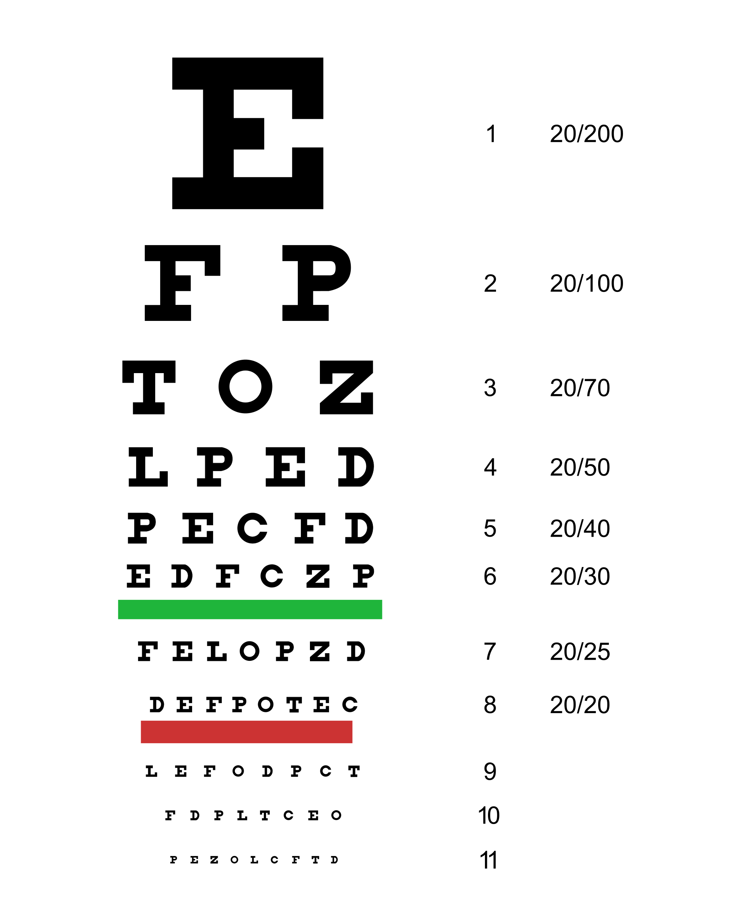
LCD panely dosahují kontrastu řádově 1 000 : 1, OLED výrazně více, ale stále mnohem méně než oko. Scény s prudkým přechodem světla a stínu proto ve VR působí plošně — pomáhá HDR, tone mapping a pečlivé nasvícení scény. U HMD je navíc klíčový absolutní jas v cd/m².
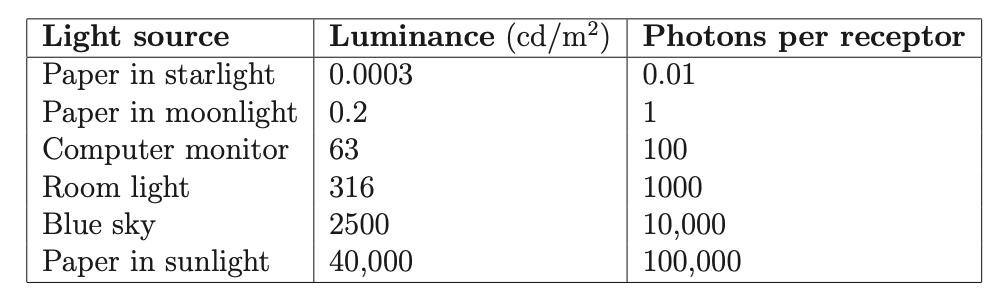
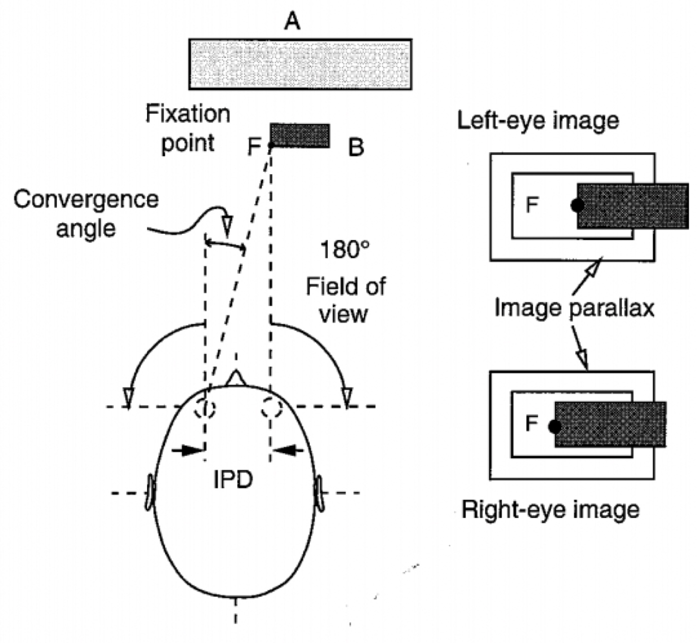
Člověk využívá několik způsobů, jak zjistit hloubku — mozek je kombinuje:
V blízkém prostoru je stereopsis nejpřesnější; nad ~10 m přebírají monokulární vodítka. Špatná stereobáze vede k chybám v odhadu vzdáleností — ve VR častý problém.
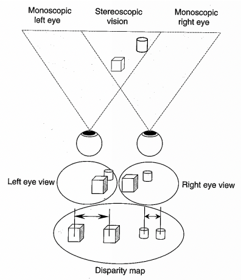
Ve VR se mohou binokulární a monokulární vodítka rozcházet — například velikost objektu neodpovídá jeho vzdálenosti. Mozek pak „přepne“ na jiné vodítko a vjem hloubky se rozpadne.
Quest 3 (2023): 2064×2208/oko, ~110°, 90–120 Hz,
~25 PPD.
Vision Pro (2024): ~3660×3200/oko (odhad; Apple uvádí
23 MP celkem), ~100°+, 90/96/100 Hz, ~34–40 PPD.
PSVR 2 (2023): 2000×2040/oko, ~110°, 90–120 Hz.
Varjo XR-4 (2023): 3840×3744/oko, ~120°×105°,
90 Hz, ~51 PPD.
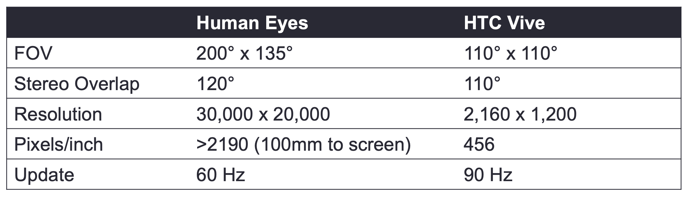
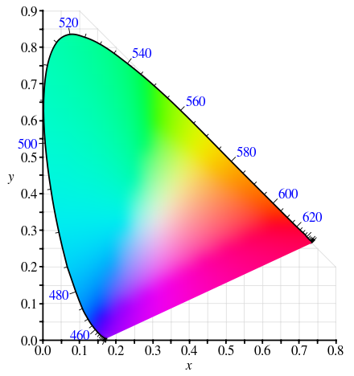
Rozlišení se každou generací zlepšuje, ale plná retinální ostrost (~60 PPD) zatím není dosažena. FoV zůstává hlavním omezením.
Lokalizace funguje díky rozdílu času a intenzity zvuku v každém z uší.
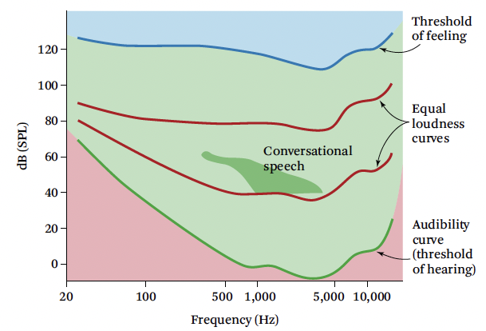
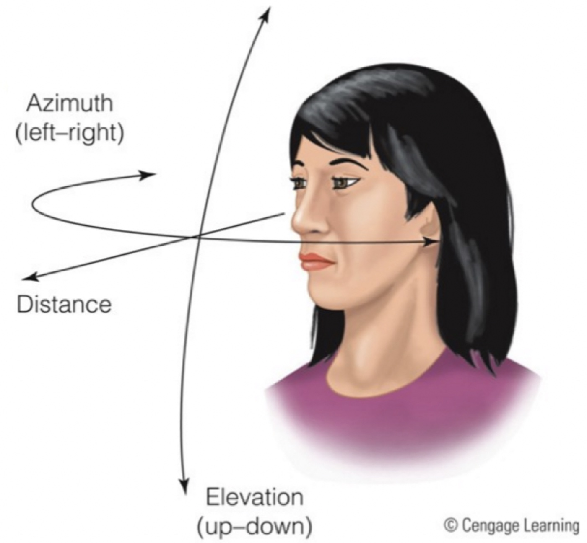
Pro zvuky přesně vpředu a vzadu vzniká cone of confusion — stejný čas i intenzita. Mozek je rozliší podle drobných spektrálních změn způsobených tvarem ucha.
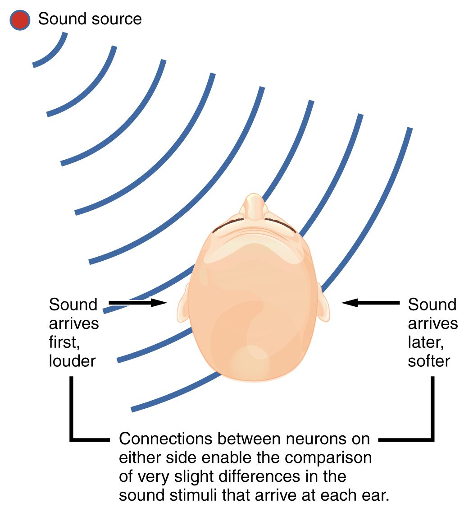
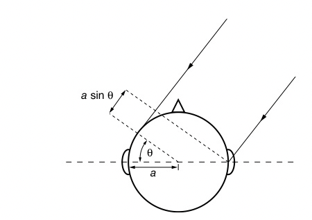
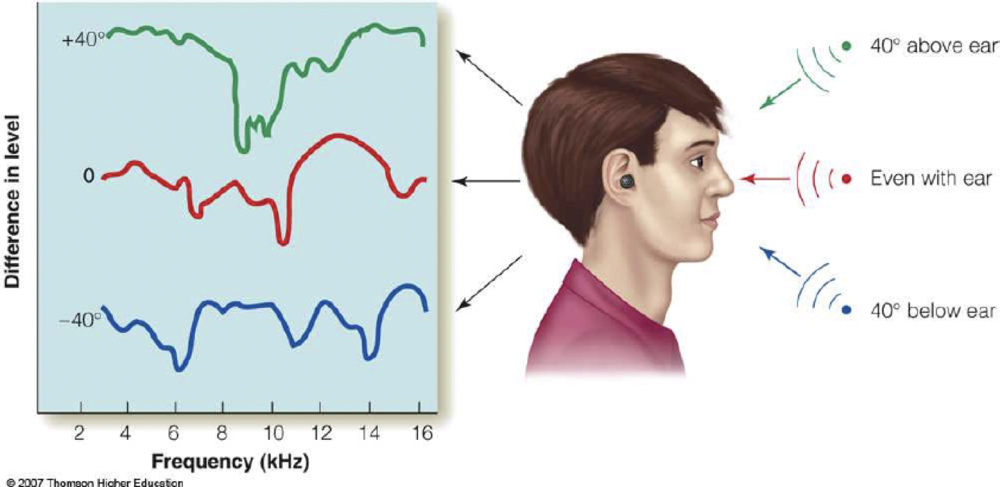
Pro kritické zvuky (výstrahy, dialog) použijte prostorový zvuk + vizuální potvrzení. Nikdy nespoléhejte pouze na sluch, pokud jde o bezpečnost nebo orientaci.
Vibrace v ovladačích, vesty, rukavice a pasivní haptika. Receptory: Merkel (tlak), Meissner (klouzání), Ruffini (protažení), Pacinian (vibrace ~200–300 Hz).
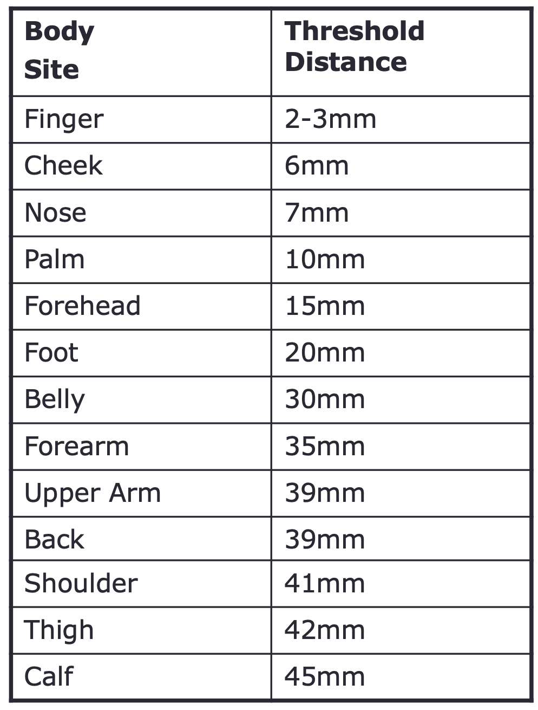
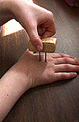
Smysl pro polohu kloubů a částí těla bez vizuální kontroly.
Smysl pro pohyb kloubů a svalové napětí.
Vnitřní ucho snímá lineární a rotační zrychlení. Právě nesoulad vestibulárního a vizuálního vstupu způsobuje kinetózu — viz následující slide.
Bottom-up vodítka: visuomotorická a visuotaktilní synchronie, first-person perspektiva a kontinuita těla. Top-down vlivy: body schema, vzhled avatara, očekávání a kulturní normy.
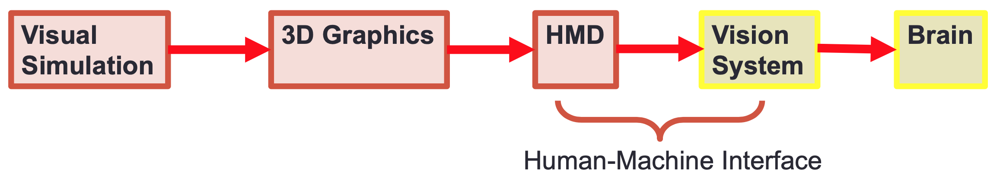
| Smysl | Technologie |
|---|---|
| Zrak | HMD, foveated rendering, eye tracking |
| Sluch | Spatial audio, HRTF, ambisonics, Doppler |
| Hmat | Vibrace, vesty, rukavice, pasivní haptika |
| Propriocepce | 6DoF tracking, full body tracking |
| Vestibulární | Fyzická lokomoce, pohyblivé platformy |
Čich — experimentální čichové displeje.
Chuť — galvanická stimulace jazyka.
Teplota — termoelektrické moduly v pokročilých rukavicích.
AR — mapování reálného prostoru (SLAM) doplňuje tracking.
Nevolnost, studený pot, závrať, bolesti hlavy, ospalost. Obvykle nastupují po několika minutách a mohou přetrvávat i po sundání headsetu.
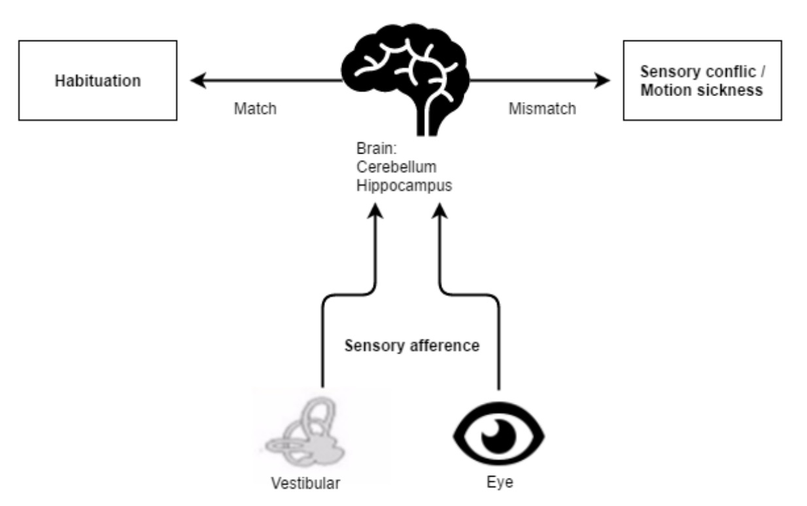
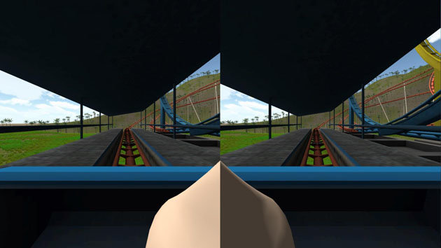
Diskrétní virtuální nos ve středu zorného pole snížil kinetózu přibližně o 13,5 % (Whittinghill et al., Purdue). Funguje jako stabilní rest frame.
Nabídněte teleport místo plynulého pohybu, snap turn po 30–45° a možnost vypnout vertikální pohyb kamery.
Motion-to-photon je doba od pohybu hlavy po zobrazení nového snímku. 20 ms je návrhový cíl; nad touto mezí roste riziko nevolnosti, ale práh je individuální. Pomáhá reprojection/timewarp a late latching.
Stabilních 90 FPS je vždy lepší než efektní scéna, která občas spadne na 50 FPS. Konzistence je důležitější než maximální detail.
Rozpočet latence: 90 Hz = 11,1 ms na snímek, 120 Hz = 8,3 ms. Tracking, render, kompozice i zobrazení se musí vejít do 20 ms — šetřete výkon foveated renderingem a instanced stereo.
Správné IPD, zaostření a poloha headsetu ovlivňují ostrost i komfort. Aplikace by měla uživatele provést kalibrací a upozornit na nesprávné nasazení.
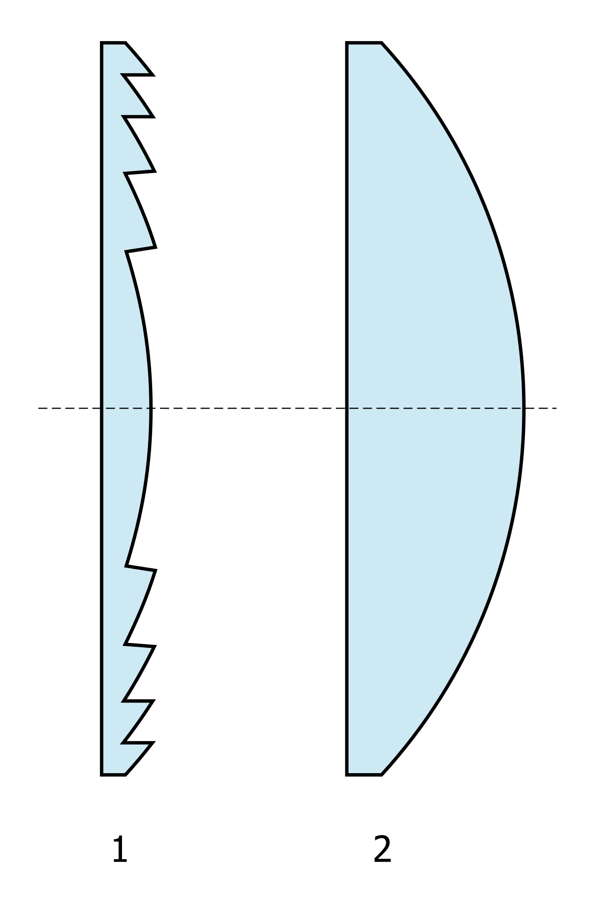
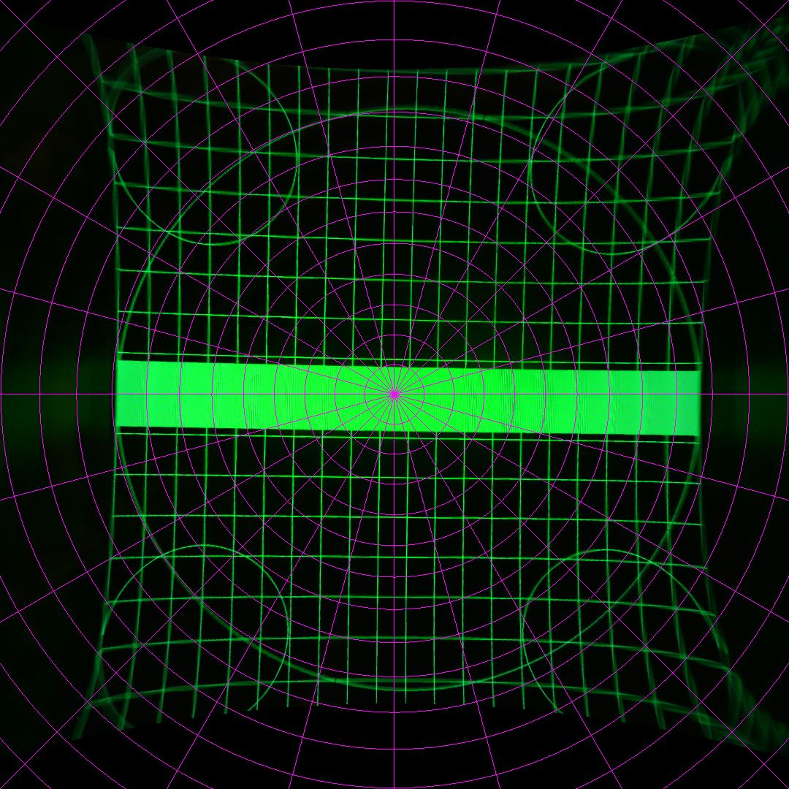
Camera-to-display alignment, distorze, chromatická aberace a rozdíly mezi jednotlivými kusy hardware.
Uncanny Valley platí i ve VR. Příliš realistický, ale nedokonalý avatar vyvolává odpor — stylizovaný avatar je často bezpečnější volbou pro sociální VR.
MSAA je pro VR vhodnější než post-process FXAA, které rozmazává obraz. Zubaté hrany jsou na blízkém displeji výrazně viditelné — antialiasing je důležitý, ale výpočetně náročný.
Renderovat ve vysokém rozlišení jen oblast, kam se oko dívá, a periferii s nižším rozlišením. V závislosti na scéně a agresivitě periferního shadingu se uvádí řádově 20–60 % úspory GPU; 40–60 % je optimistický případ.
Uživatel nevidí okolí — aplikace musí aktivně bránit kolizi s nábytkem a dalším osobám. Passthrough a hranice herní zóny nejsou volitelné doplňky.
Proteus Effect (Yee & Bailenson, 2007): lidé se chovají v souladu s tím, jak vypadá jejich avatar. Uživatelé s atraktivnějším avatarem vystupují sebejistěji — design avataru je proto nástroj, ne jen estetika.
Technické parametry HMD ověřujte u výrobců (Apple, Meta, Sony, Varjo, Valve); údaje se
mění každou generaci. Kompletní bibliografie je v doprovodném souboru pvr09.md.
Zlaté pravidlo: VR funguje, protože mozek si rekonstruuje realitu ze senzorických vstupů. Vaším úkolem je poskytnout co nejkonzistentnější a nejbohatší vstup — zbytek udělá mozek sám.
Děkuji za pozornost — Petr Pauš
Následující slidy jsou připravené jako volitelné rozšíření.
Kokpit, horizont, podlaha a stabilní rest frame; teleport a snap turn místo plynulé rotace; vyhýbat se akceleraci a rotaci kamery bez vizuální opory.
Vizuální pohyb neodpovídá vestibulárnímu klidu; mozek konflikt vyhodnotí jako možnou otravu.
Kinetóza vzniká, když se tělo nedokáže stabilizovat (Riccio & Stoffregen, 1991).
Mozek potřebuje stabilní referenční rámec; jeho absence zvyšuje nevolnost (Keshavarz & Hecht, 2011).
Kritickou informaci nedávejte jen do jednoho smyslu. Kombinujte zvuk, vibraci a vizuální cue — redundance zvyšuje šanci, že ji uživatel zachytí.
Černá je průhledná, bílá se sčítá s pozadím. Kontrast závisí na okolním světle — venku je potřeba řádově vyšší jas.
| Receptor | Typ | Vnímá |
|---|---|---|
| Merkel | SA-I | tlak, tvar, jemné detaily |
| Meissner | RA-I | dotyk, klouzání, nízké frekvence |
| Ruffini | SA-II | protažení, tlak |
| Pacinian | RA-II | vibrace, ~200–300 Hz |
Prsty ~2–3 mm; dlaň ~10 mm; předloktí ~35 mm; záda ~40 mm. Hustota receptorů se výrazně liší podle místa na těle.